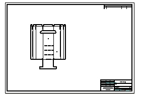
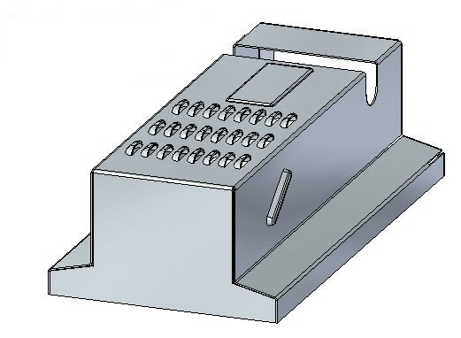
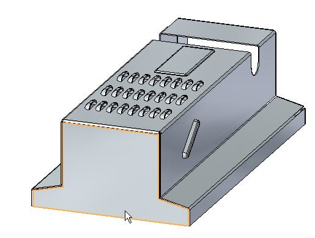
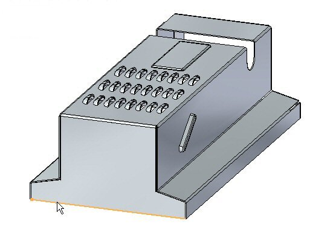
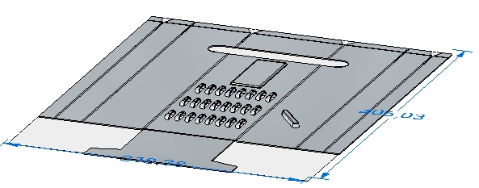
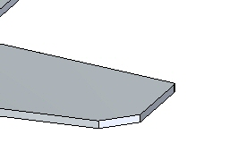
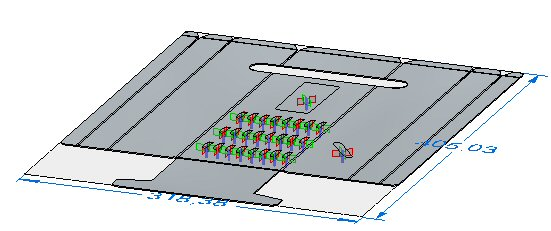
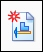

Activity: Creating a flat pattern from a sheet metal part
Click here to download the activity file.

Objectives
This activity demonstrates how to create a flat pattern from a sheet metal part, and the various options available. In this activity you will:
-
Create a flat pattern from a sheet metal part.
-
Control the orientation of the flat pattern.
-
Understand the options available for using the flat pattern with downstream manufacturing applications.
Start Solid Edge 2023.
Open flatpattern_activity.psm.
Click Tools→Model→Flatten.

The Flat Pattern command bar is displayed.
Select the face shown.

Select the edge shown to orient the flat pattern.

The edge selected defines the x axis of the flat pattern.
The flat pattern is created.

Notice there is a new tab in PathFinder for the flat pattern.
Click the Flat Pattern Cut Size button.
Observe the following on this dialog box.
-
The cut size of the flat pattern dimensions can be displayed.
-
Alarms can be set to notify if the cut size is larger than a desired size.
-
The current cut size is displayed if this command is chosen in the flattened state rather than the design state.
Close the dialog box.
Click the Flat Pattern Treatment Options button.
The flat pattern treatment options can also be set by choosing the File menu→Settings→Options.
Set Outside Corner Treatments to Chamfer and set the value to 4.00 mm. Click Apply. Observe the results. Chamfers are applied to the exterior corners that do not contain rounds.

This corner treatment only shows up in the flattened state and not in the designed state.
Set Formed feature display to As feature loops and feature origins and click Apply. Observe the results.

When placing a flat pattern onto a drawing sheet in Solid Edge Draft, this display controls what geometry is placed. If the sketch or 3D geometry is desired on the drawing sheet, the option will need to be set here.
Set Formed feature display to As feature origin and click Apply. Observe the results.
Save the file.
Click the File menu.
Click Save as→Save as Flat.
Save the file as my_flat.dxf.
Some numerical control machines can read a .dxf file directly. The flat pattern can also be saved as a Solid Edge part file.
Click the File tab.
Click New→Drawing of Active Model.

Use the default template and ensure the Run Drawing View Creation Wizard button is checked, and click OK.
On the Drawing View command bar click the Drawing View Wizard Options button.
In the Drawing View Creation Wizard, click the Flat Pattern option in Drawing view options. Click OK.
Click the Drawing View Layout button and on the Drawing View Layout dialog box, select the top view and then click OK.
Click to place the flat pattern on the drawing sheet and click the right mouse button to finish the command.
The feature origins, or strike points, for the deformation features are displayed. These can be precisely located by dimensioning.
The display of tangent edges on the drawing view represents the locations of the edges of bends.
Close the sheet metal documents without saving.
In this lesson you created a flat pattern and changed the display options. You also placed the flat pattern on a drawing sheet.
Answer the following questions:
-
Describe the steps needed to create a flat pattern.
-
When saving a flat pattern using the save as flat command, what file types are available?
-
What is a feature origin on a flat pattern?